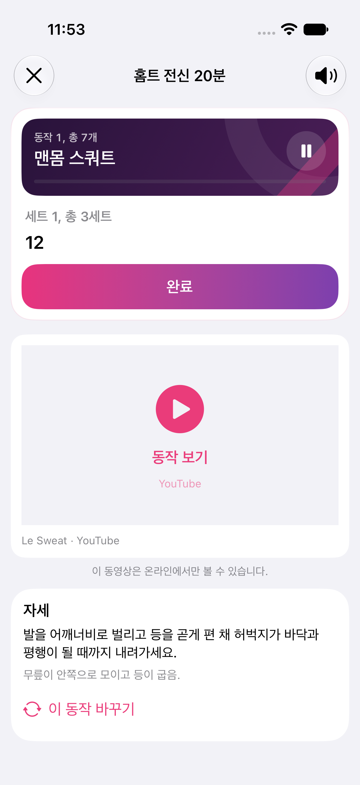
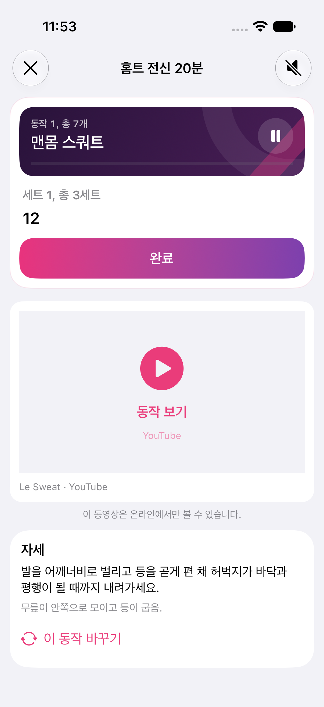

Nikita Revin, Tonus 개발자 · · 버전 1.7.1
늦은 밤 집에서 운동할 때는 알림음을 끄고 타이머를 계속 쓸 수 있습니다. 운동 화면 오른쪽 위의 스피커 버튼을 누르세요. 이 설정은 Tonus의 운동 알림음에만 적용됩니다.
운동 화면에서 스피커 누르기
운동을 시작하면 화면 오른쪽 위에 스피커 아이콘이 보입니다. 아이콘을 누르면 스피커에 사선이 생기고 알림음이 꺼집니다. VoiceOver에서는 버튼 이름이 운동 알림음이고 상태는 켜짐 또는 꺼짐으로 표시됩니다.

타이머는 계속 진행됩니다
이 설정은 동작을 시작하거나 휴식으로 넘어갈 때 Tonus가 재생하는 짧은 알림음을 바꿉니다. 알림음을 꺼도 진행 중인 타이머를 멈추지 않습니다. 동작이 바뀌는 시점을 화면에서 확인할 수 있습니다. 운동 동영상 소리는 동영상의 재생 설정에서 확인하세요.

다음 운동에서도 설정이 유지됩니다
다음에 앱을 열어도 마지막으로 고른 설정이 유지됩니다. 다시 알림음을 듣고 싶으면 운동 화면에서 스피커를 한 번 더 누르세요.